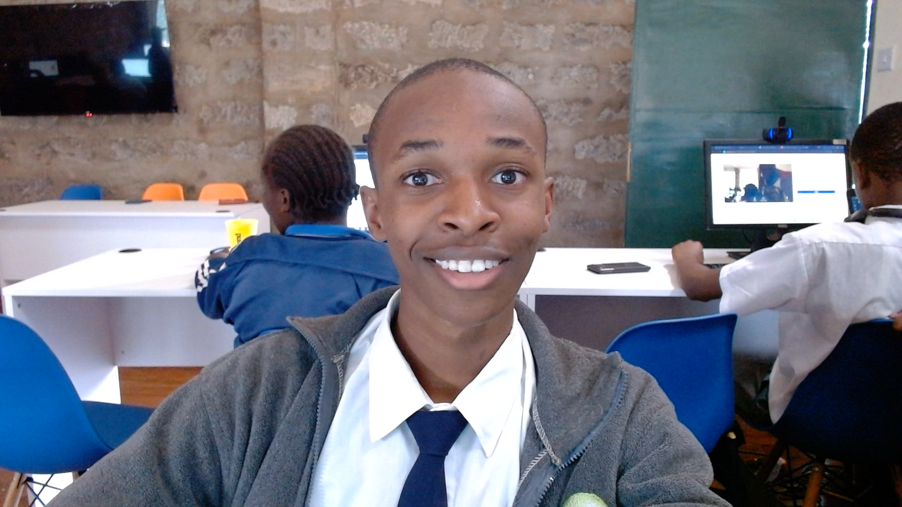

My Resume
Nathaniel Kangethe

Summary
- I am an enthusiastic and creative coder, passionate about building vibrant,
user-friendly websites while continuously learning and improving my programming skills.
My goal is to develop projects that showcase both technical ability and creative design,
while growing into a versatile and confident developer.
Education
-
Doctor of Philosophy (Ph.D.) in Computer Science - (Oxford University)
(2030)
Specialization: (Web Technologies)
-
Master of Science (M.Sc.) in Software Engineering - (Cambridge University)
(2030-2035)
-
Bachelor of Science (B.Sc.) in Computer Science - (Oxford University)
(2035-2040)
-
High School Diploma - (Kijani Ridge High), (2022-2025)
Work Experience
Junior Web Developer - CodeCraft Solutions
January 2024 - Present
- Built and maintained responsive websites using HTML, CSS, and JavaScript.
- Collaborated with designers and backend developers to deliver seamless user experiences.
- Optimized website performance and improved loading times by 30%.
- Participated in code reviews and implemented best practices for clean, maintainable code.
IT Support Intern - TechHub Africa
July 2023 - December 2023
- Assisted in troubleshooting hardware and software issues for over 100 users.
- Set up and configured workstations, networks, and basic servers.
- Documented IT support procedures to improve team efficiency.
- Provided user training sessions on productivity tools and security practices.
Freelance Web Designer
2022 - 2023
- Designed custom websites for small businesses using WordPress and modern front-end tools.
- Developed visually appealing, mobile-friendly designs with a focus on user experience.
- Managed client communications, project timelines, and revisions.
- Delivered 10+ projects on time with high customer satisfaction.
Skills
technical Skills
- Web Development: HTML5, CSS3, JavaScript (ES6+), Bootstrap, Tailwind CSS
- Programming: Python, Java, C++ (basic proficiency)
- Frameworks & Tools: React.js, Node.js, Git, GitHub
- CMS & Design: WordPress, Figma, Adobe XD
- Databases: MySQL, MongoDB (basic knowledge)
Awards and Certificates
Certificates:
- Responsive Web Design Certification - freeCodeCamp (2024)
- IT Support Essentials - Google IT Support Certificate (2023)
- JavaScript Algorithms and Data Structures Certification - freeCodeCamp (2024)
Awards:
- Best Student Project - Web Development Bootcamp (2024)
- Top 10 Hackathon Finalist CodeHack Africa (2023)
- Outstanding Creativity Award - School Tech Fair (2022)
Contact Me
My Hobbies